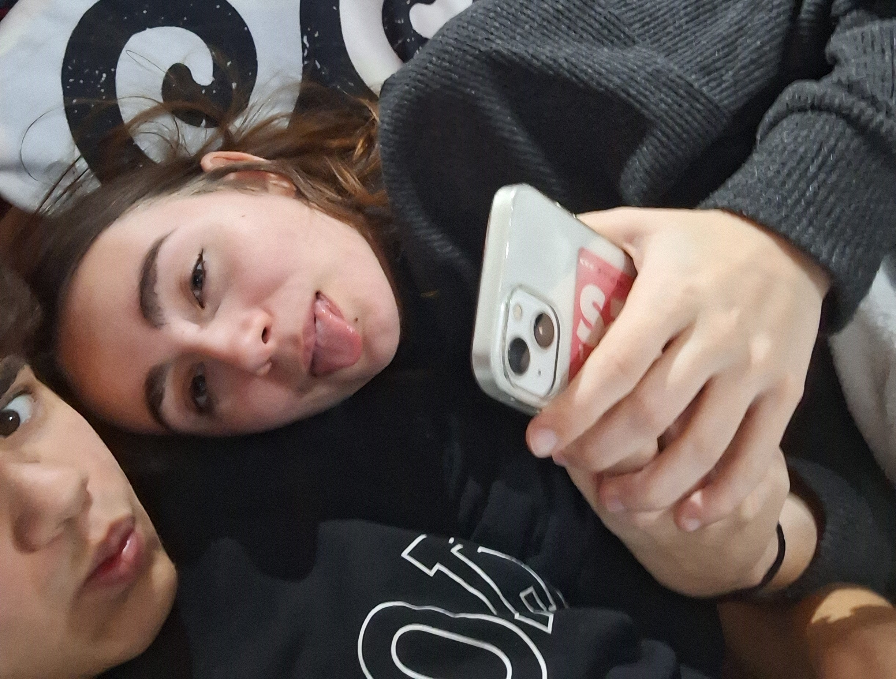
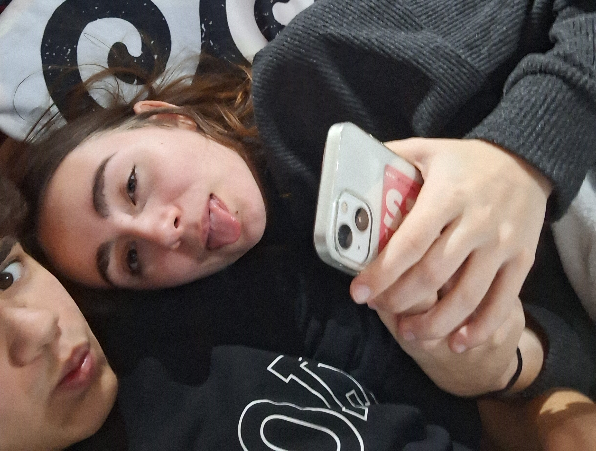
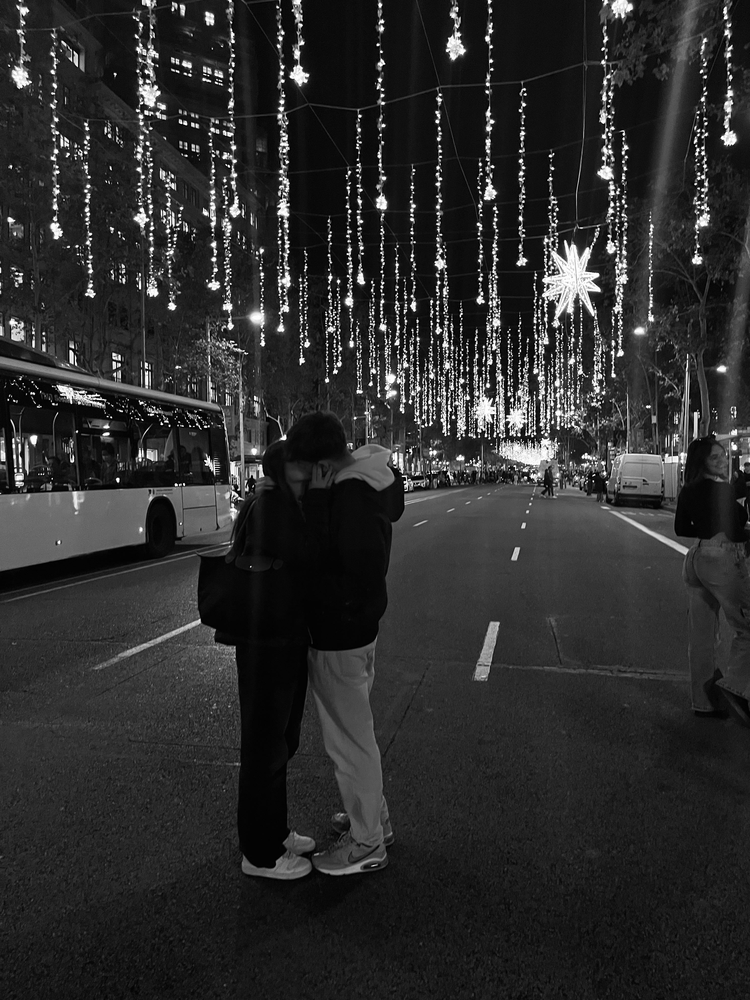
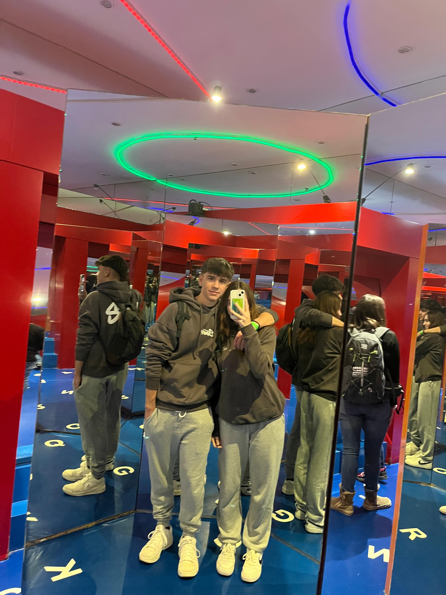
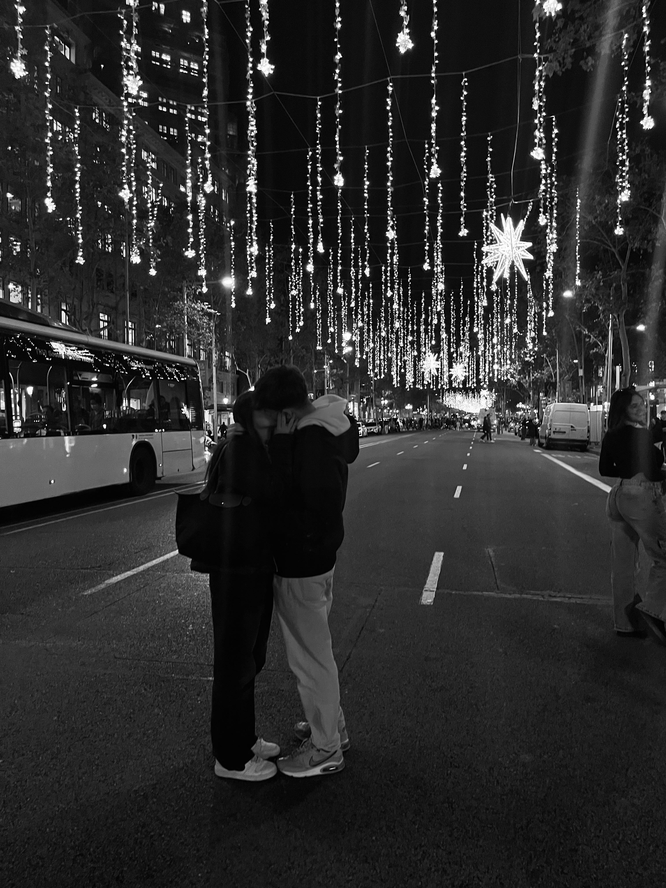
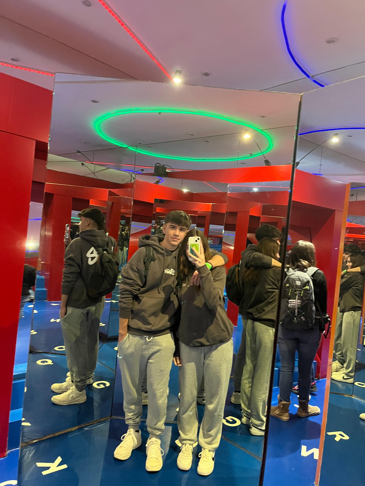

NUESTRA PÁGINA WEB
He creado esta pagina web para que siempre que te apetezca o estés mal, puedas recordar los momentos mas bonitos que hemos vivido juntos y lo mucho que te quiero y te voy a querer pase lo que pase. A partir de ahora, encontraras un pedazo extraido de mi corazón que he dejado en esta web para que nunca olvides lo que he sentido, siento y sentiré por ti el resto de mi vida.
Porque me gustas tanto
- Porque me importas más de lo que puedo explicar
- Porque me haces sentir querido.
- Porque me gusta cómo me miras.
- Porque contigo puedo ser yo al cien por cien.
- Porque me aceptas con mis defectos.
- Porque cada recuerdo contigo vale la pena.
- Porque me gusta soñar contigo.
- Porque haces especiales los días normales.
- Porque tu risa es de mis sonidos favoritos.
- Porque haces que el tiempo pase volando cuando estoy contigo.
- Porque me gusta imaginar un futuro a tu lado.
- Porque eres parte de mis pensamientos diarios.
- Porque contigo soy feliz, así de simple.


Felices Fiestas
Este año ha tenido de todo, y no siempre cosas buenas. Ha habido momentos de estrés, de cansancio y de sentir que las cosas se nos venían encima. Días en los que parecía que no llegábamos a todo y en los que la paciencia se agotaba demasiado rápido. Aun así, en medio de todo eso, hemos seguido adelante, compartiendo la rutina, los silencios y también las conversaciones difíciles que tanto cuestan pero que tanto importan.
Estas fiestas llegan como una pausa necesaria, no para fingir que todo ha sido perfecto, sino para reconocer el esfuerzo que hemos hecho para seguir juntos. Para valorar que, a pesar de los problemas, de los enfados y de las dudas, ninguno de los dos se ha ido. Hemos aprendido que estar juntos no es solo disfrutar de lo bueno, sino también sostenernos cuando lo demás pesa más de la cuenta.
Por eso, para mí, estas fiestas significan seguir aquí contigo. Significan elegirnos una vez más, sin promesas vacías ni palabras bonitas de más. Solo la certeza de que, incluso en los momentos difíciles, seguimos caminando en la misma dirección.


Gracias por ser tú
Gracias por ser quien eres incluso en los días complicados. Por no esconder tus emociones y por permitirme ver tus miedos, tus inseguridades y también tu fuerza. Gracias por hablar cuando duele, por escuchar cuando no es fácil y por intentar entenderme incluso cuando no estamos de acuerdo.
Gracias por quedarte cuando las cosas se ponen cuesta arriba. Por no rendirte a la primera y por apostar por nosotros aun sabiendo que no siempre es sencillo. Tu manera de afrontar los problemas, de decir lo que sientes y de seguir intentándolo es algo que valoro más de lo que a veces sé expresar.
No te doy las gracias por ser perfecta, porque no lo eres y no lo necesitas. Te las doy por ser real, por ser honesta y por ser tú, con todo lo que eso implica. Y porque, con todo y con eso, sigues siendo la persona con la que quiero compartir mi vida.
 


Lo que queda por llegar
No tengo respuestas para todo ni puedo prometer que el camino será fácil. Sé que vendrán más retos, más discusiones y momentos en los que habrá que volver a elegir quedarse. Pero también sé que todo lo que hemos pasado hasta ahora nos ha enseñado a hacerlo mejor, con más paciencia y más comprensión.
Lo que queda por llegar no lo imagino perfecto, lo imagino verdadero. Con días buenos y otros no tanto, con errores y aprendizajes, pero siempre con la intención de avanzar juntos. Quiero seguir creciendo contigo, equivocándome, mejorando y construyendo algo que tenga sentido para los dos.
Si algo tengo claro es que quiero enfrentar lo que venga a tu lado. No porque sea fácil, sino porque vale la pena. Seguimos aquí, y mientras sigamos eligiéndonos, todo lo que queda por llegar merece la pena vivirlo juntos.
 



Si estás leyendo esto es porque hoy no ha sido fácil. Quiero que recuerdes: no estás sola, nunca lo has estado y nunca lo estarás mientras yo esté aquí. Respira, tómate tu tiempo… yo sigo contigo.
Un último mensaje
Puedo equivocarme, pero seguimos aquí. Y mientras sigamos eligiéndonos, todo merece la pena.